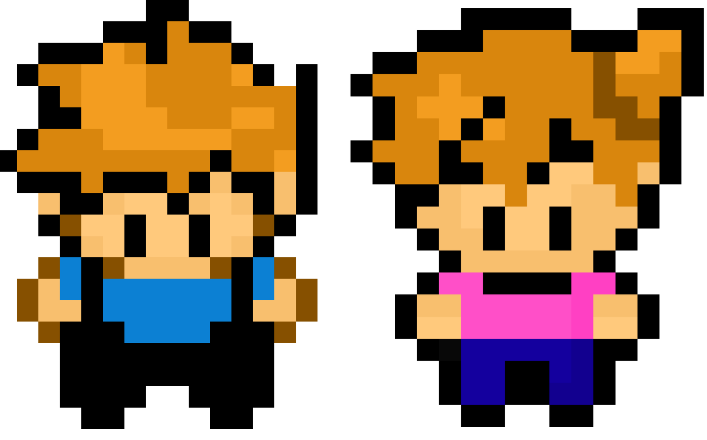

Qual o motivo do site?
Quando pequeno, eu fui introduzido ao mundo dos jogos, comecei jogando Super Mario Bros e The Legend of Zelda. Ainda pequeno, eu comecei a assitir o anime de pokémon e acabei virando fã por amar os pokémons, pela diversidade de aparência e poderes, até que descobri que existiam jogos da mesma franquia, e então eu me apaixonei. Um jogo de meus monstrinhos favoritos em RPG, para mim é um prato cheio.
Além disso, minha paixão pela tecnologia começou aos 16 anos, quando terminei um curso de computação em nuvem, e então, eu havia me decidido que eu gostaria de seguir o ramo da tecnologia, possuindo o apoio de minha irmã que também seguiu o ramo da tecnologia.

Agradecimentos
Eu gostaria de deixar meus agradecimentos a toda minha família, mas principalmente a minha irmã Fernanda. Ela sempre agiu como se fosse minha segunda mãe, sempre me apoiou em minhas decisões e também me ajudou nas minhas escolhas de vida. Graças a ela eu fui introduzido ao mundo dos jogos, que é meu maior hobby desde pequeno, também conheço a área de tecnologia por conta dela, e hoje sigo estudando esta área que cresce cada vez mais. Sem ela eu não estaria estudando atualmente na SPTech e fazendo este site, que para mim é uma grande realização, um sonho realizado.